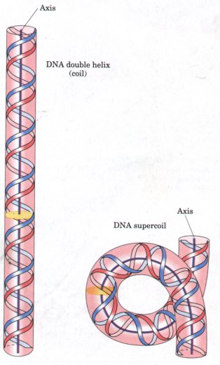
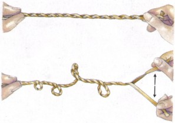
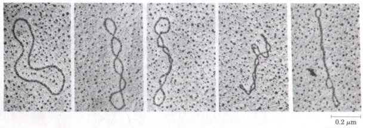
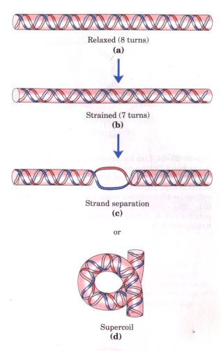
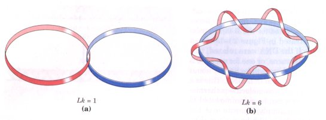
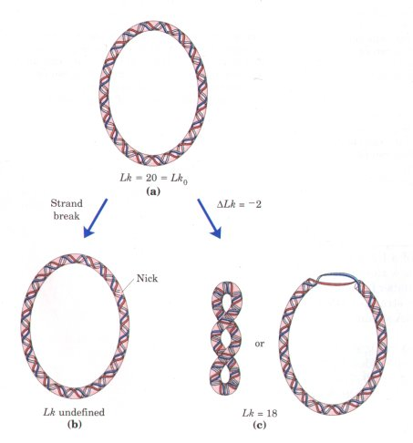
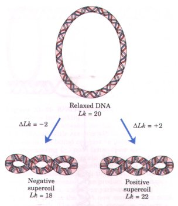
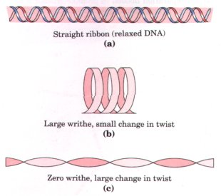
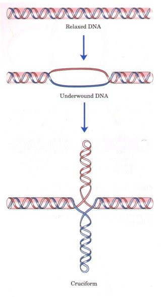
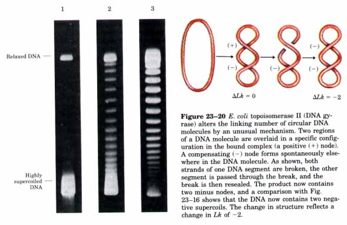

| From the examples given above, it is clear that cellular DNA must be very
tightly compacted just to fit into the cell. This implies a high degree of structural
organization. It is not enoughjust to fold the DNA into a small space, however. The
packaging must permit access to the information in the DNA for processes such as
replication and transcription. Before considering how this is accomplished, we must
examine an important property of DNA structure that we have not yet considered-DNA
supercoiling. The term "supercoiling" means literally the coiling of a coil. A telephone cord for example, is typically a coiled wire. The twisted path often taken by that wire as it goes from the base of the phone to the receiver generally describes a supercoil (Fig. 23-9). DNA is coiled in the form of a double helix. Let us define an axis about which both strands of the DNA coil. A bending or twisting of that axis upon itself (Fig. 23-10) is referred to as DNA supercoiling. As detailed below, DNA supercoiling is generally a manifestation of structural strain. Conversely, if there is no net bending of the DNA axis upon itself, the DNA is said to be in a relaxed state. It is probably apparent that DNA compaction must involve some form of supercoiling. Perhaps less apparent is the fact that replicating or transcribing DNA also must induce some degree of supercoiling. |
 Figure 23-10 Supercoiling of DNA. Supercoiling is the twisting of the DNA axis upon itself. |
Replication and transcription both require a transient separation of the strands of DNA, and this is not a simple process in a DNA structure in which the two strands are helically interwound. Figure 23-11 illustrates this point.
| That supercoiling must occur in cellular DNA would seem almost trivial
were it not for one additional fact: many circular DNA molecules remain highly supercoiled
even after they are purified from protein and other cellular components. Supercoiling is
an important and intrinsic aspect of DNA tertiary structure that is ubiquitous in cellular
DNAs and highly regulated by each cell. A number of quantifiable properties of supercoiling have been established, the study of which has provided many insights into DNA structure and function. This work has drawn heavily on concepts derived from a branch of mathematics called topology, the study of properties of an object that do not change under continuous deformations. In the case of DNA, a topological property is one that is not affected by twisting and turning of the DNA axis and can only be changed by breakage and rejoining of the DNA backbone. We now turn to an examination of the fundamental properties of supercoiling and the physical origin of the phenomenon itself. |
 Figure 23-11 Supercoiling induced by separating the strands of a helical structure. 'Iwist two linear strands of rubber band into a right-handed doublehelix as shown. Fix the left end by having a friend hold onto it. If the two strands are pulled apart at the right end, the resulting strain will produce supercoiling as shown. |
To understand supercoiling we must now focus on the properties of small, circular DNAs such as plasmids and the DNAs derived from many small DNA viruses. When these DNAs contain no breaks in either strand, they are called closed-circular DNAs. If the DNA making up a closed-circular molecule conforms closely to the B-form structure (see Fig. 12-15), with one turn of the double helix for each 10.5 base pairs, the DNA will be relaxed rather than supercoiled (Fig. 23-12). Supercoiling is not a random process and does not occur unless the DNA is subject to some form of structural strain. When purified, however, closed-circular DNAs are rarely relaxed regardless of their biological origin. Furthermore, the degree of supercoiling tends to be well defined and characteristic of DNAs derived from a given cellular source. These facts suggest that the DNA structure is strained in some way to induce the supercoiling, and that the degree of strain introduced is regulated by the cell.

Figure 23-12 Electron micrographs of relaxed and supercoiled plasmid DNAs. The molecule at the left is relaxed, and the degree of supercoiling increases from left to right.
| In almost every instance, the strain is a result of an underwinding
of the DNA in the closed circle. In other words, there are fewer helical turns in the DNA
than would be expected for the B-form structure. The effect of underwinding is illustrated
in Figure 23-13 for an 84 base pair segment of a circular DNA. If the DNA were relaxed,
this segment would contain eight double-helical turns, or one for every 10.5 base pairs.
If one of these turns is removed, there will be 84/7 or about 12.0 base pairs per turn
rather than the 10.5 found in B-DNA. This is a deviation from the most stable DNA form,
and the molecule is thermodynamically strained as a result. The strain can be accommodated
in one of two ways. First, the two strands can simply separate over the distance
corresponding to one turn of B-DNA-10.5 base pairs (Fig. 23-13). Alternatively, the DNA
can form a supercoil. When the axis of the DNA is twisted on itself in a certain manner,
neighboring base pairs in underwound DNA can stack in positions that more closely
approximate those they would assume in B-DNA. Every cell actively underwinds its DNA with the aid of enzymatic processes to be described below. The resulting strained state of the DNA represents a form of stored energy. In isolated closed-circular DNA, strain introduced by underwinding generally is accommodated by supercoiling rather than strand separation, because twisting the axis of the DNA usually requires less energy than breaking the hydrogen bonds that stabilize paired bases. As we shall see below, however, the underwinding of DNA in vivo makes it easier to separate DNA strands and thereby gain access to the information they contain. Facilitating strand separation is one important reason for maintaining DNA in an underwound state. |
 Figure 23-13 The effects of DNA underwinding. (a) A segment of DNA, 84 base pairs long, in its relaxed form with eight helical turns. (b) Removal of one turn induces structural strain that can be accommodated by (c) strand separation over 10.5 base pairs or by (d) formation of a supercoil. |
The underwound state can be maintained only if the DNA is a closed circle or if it is bound and stabilized by proteins such that the strands are not free to rotate about each other. If there is a break in one of the strands of a protein-free circular DNA, free rotation at that point will cause the underwound DNA to revert spontaneously to the relaxed state. In a closed-circular DNA, however, the number of helical turns present is fixed and cannot be changed without at least transiently breaking one of the DNA strands. The number of helical turns in DNA is quantifiable and leads to a more precise description of supercoiling.
The branch of mathematics called topology provides a number of ideas that are useful in this discussion. Perhaps foremost among these is the concept of linking number. The linking number of a DNA molecule rigorously specifies the number of helical turns in a closed-circular DNA, in the absence of any supercoiling. Linking number is a topological property because it does not vary when double-stranded DNA is twisted or deformed in any way, as long as both DNA strands remain intact.
The concept of linking number (lk) is illustrated in Figure 23-14. We begin by separating the two strands of a double-stranded circular DNA. If these two strands are linked as shown in Figure 23-14a, they are effectively joined by what can be described as a topological bond.

Figure 23-14 Linking number, Lk. The molecule in (a) has a linking number of 1. The molecule in (b) has a linking number of 6. One of the strands in (b) is kept untwisted for illustrative purposes to define the border of an imaginary surface (shaded blue). The number of times the twisting strand penetrates this surface provides one definition of linking number.
Even if all hydrogen bonds and base-stacking interactions are abolished such that the strands are not in physical contact, this topological bond will still link the two strands. If one of the circular strands is thought of as the boundary of an imaginary surface (much as a soap film might span the space framed by a circular wire), the linking number can be defined rigorously as the number of times the second strand pierces this surface. For the molecule in Figure 23-14a Lk = 1; for that in Figure 23-14b Lk = 6. The linking number for a closed-circular DNA is always an integer. By convention, if the links between two DNA strands are arranged so that the strands are interwound in a right-handed helix, the linking number is defined as positive (+). Conversely, for strands interwound as a left-handed helix the linking number is negative (-). Given that left-handed Z-DNA occurs only rarely, negative linking numbers are not encountered in studies of DNA for all practical purposes.
| We can now extend these ideas to a closed-circular DNA with 210 base
pairs (Fig. 23-15). For a closed-circular DNA molecule that is relaxed, the linking number
is simply the number of base pairs divided by 10.5; in this case, Lk = 20. For a
circular DNA molecule to have a topological property such as linking number, neither
strand may contain a break. If there is a break in either strand, it is possible in
principle to unravel the strands and separate them completely (Fig. 23-15b). Clearly, no
topological bond exists in this case, and Lk is undefined. We can now describe DNA underwinding in terms of changes in the linking number. The linking number in relaxed DNA is used as a reference and called Lk0. In the molecule shown in Figure 23-15a, Lk0 = 20; if two turns are removed from this molecule, Lk will equal 18. The change can be described by the equation ΔLk = Lk-Lk0 = 18-20 = -2 |
 Figure 23-15 Linking number applied to closedcircular DNA molecules. A 210 base pair circular DNA is shown in three forms: (a) relaxed, Lk = 20; (b) relaxed with a nick (break) in one strand, Lk undefined; (c) underwound by two turns, Lk = 18. The underwound molecule can occur as a supercoiled (left) or strand-separated (right) structure. |
It is often convenient to express the change in linking number in terms of a length-independent quantity called the specific linking difference (σ), which is a measure of the turns removed relative to those present in relaxed DNA. The term σ is also called the superhelical density and is defmed as
| σ = | ΔLk LK0 |
In the example in Figure 23-15c, σ = -0.10, which means that 10% of the helical turns present in the DNA (in its B form) have been removed. The deg'ree of underwinding in cellular DNAs generally falls into the range of 5 to 7%; that is, σ = -0.05 to -0.07. The negative sign of σ denotes that the change in linking number comes about as a result of underwinding the DNA. The supercoiling induced by underwinding is therefore defmed as negative supercoiling. Conversely, under some conditions DNA can be overwound, and the resulting supercoiling is defmed as positive. Note that the twisting path taken by the axis of the DNA helix when the DNA is underwound (negative supercoiling) is the mirror image of that taken when the DNA is overwound (positive supercoiling) (Fig. 23-16). Supercoiling is not a random process; the path of the supercoiling is largely prescribed by the torsional strain imparted to the DNA by decreasing or increasing the linking number relative to B-DNA. |
 Figure 23-16 For the relaxed DNA molecule of Figure 23-15a, underwinding or overwinding by two helical turns (Lk = 18 or 22) will produce negative or positive supercoiling as shown. Note that the twisting of the DNA axis is opposite in sign in the two cases. |
| The linking number can be changed by ±1 by breaking one DNA strand,
rotating one of the ends 360ο about the unbroken strand, and rejoining the broken ends.
This change has no effect on the number of base pairs, or indeed on the number of atoms in
the circular DNA molecule. Two forms of a given circular DNA that differ only in a
topological property such as linking number are referred to as topoisomers. Linking number can be broken down into two structural components called writhe (Wr) and twist (TW) (Fig. 23-17). These are more difficult to describe intuitively than linking number, but to a first approximation Wr may be thought of as a measure of the coiling of the helix axis and TW as determining the local twisting or spatial relationship of neighboring base pairs. When a change in linking number occurs, some of the resulting strain is usually compensated by writhe (supercoiling) and some by changes in twist, giving rise to the equation Lk=Tw+Wr |
 Figure 23-17 A ribbon model for illustrating twist and writhe. The ribbon in (a) represents the axis of a relaxed DNA molecule. Strain introduced by twisting the ribbon (underwinding the DNA) can be manifested as a change in writhe (b) or a change in twist (c). Changes in linking number are usually accompanied by changes in both writhe and twist. |
| Twist and writhe are geometric rather than topological properties,
because they may be changed by deformation of a closed-circular DNA molecule. In addition,
TW and Wr. need not be integers. The concepts outlined above can be summarized by considering the supercoiling of a typical bacterial plasmid DNA. Plasmids are generally closed-circular DNA molecules. Because DNA is a right-handed helix, a plasmid will have a positive linking number. When the DNA is relaxed, the linking number or Lk0 is simply the number of base pairs divided by 10.5. A typical plasmid, however, is generally underwound in the cell. Therefore, lk is less than Lk0, σ is negative, and the plasmid is negatively supercoiled. 'I~pically for a bacterial plasmid, Q = -0.05 to -0.07. Underwinding DNA facilitates a number of structural changes in the molecule. Strand separation occurs more readily in underwound DNA. This is critical to the processes of replication and transcription, and represents a major reason why DNA is maintained in an underwound state. Other structural changes are of less physiological importance but help illustrate the effects of underwinding. A cruciform (see Fig. 12-21) generally contains a few unpaired bases, and DNA underwinding helps to maintain the required strand separation (Fig. 23-18). In addition, underwinding a right-handed DNA helix facilitates the formation of short regions of left-handed Z-DNA, where the DNA sequence is consistent with Z-DNA formation (Chapter 12). |
 Figure 23-18 DNA underwinding promotes cruciform structures. In relaxed DNA, cruciforms seldom occur because the linear DNA accommodates more paired bases than does the cruciform structure. Underwinding the DNA facilitates the partial strand separation needed to promote cruciform formation at appropriate sequences (palindromes). |
In every cell, DNA supercoiling is a precisely regulated process that influences many aspects of DNA metabolism. Not surprisingly, there are enzymes in every cell whose sole purpose is to underwind andlor relax DNA. The enzymes that increase or decrease the extent of DNA underwinding are called topoisomerases, and the property of DNA they affect is the linking number. These enzymes play an especially important role in processes such as replication and DNA packaging. There are two classes of topoisomerases. Type 1 topoisomerases act by transiently breaking one of the two DNA strands, rotating one of the ends about the unbroken strand, and rejoining the broken ends; they change Lk in increments of l. Type 2 topoisomerases break both DNA strands and change Lk in increments of 2.
The effects of these enzymes can be demonstrated using agarose gel electrophoresis (Fig. 23-19). A population of identical plasmid DNAs with the same linking number will migrate as a discrete band during electrophoresis. Topoisomers with Lk values differing by as little as 1 can be separated by this method. In this way changes in linking number induced by topoisomerases can readily be observed.
There are at least four different topoisomerases in E. coli, distinguished by Roman numerals I through IV. The type 1 topoisomerases (topoisomerases I and III) generally relax DNA by removing negative supercoils (they increase Lk). One bacterial type 2 enzyme, called topoisomerase II or, alternatively, DNA gyrase, can introduce negative supercoils (decrease Lk). It uses the energy of ATP and a surprising mechanism to accomplish this (Fig. 23-20). The superhelical density of bacterial DNA is balanced by regulation of the net activity of topoisomerases I and II.
Eukaryotic cells also have type 1 and type 2 topoisomerases; in most eukaryotes there is one known example of each type, called topoisomerase I and II, respectively. The type 2 enzymes in eukaryotic cells cannot underwind DNA (introduce negative supercoils), although both types can relax both positive and negative supercoils. We will consider one probable origin of negative supercoils in eukaryotic cells in our discussion of chromatin.

Figure 23-19 Circular DNA molecules that differ in linking number can be separated by gel electrophoresis. All the DNA molecules shown here have the same number of base pairs. Because supercoiled DNA molecules are more compact, they migrate more rapidly in a gel than the corresponding relaxed molecules. Gels such as those shown here separate topoisomers only over a limited range of superhelical density, so that highly supercoiled DNA migrates in a single band (lane 1) even though many different topoisomers may be present. Lanes 2 and 3 illustrate the effect of treating the supercoiled DNA with a type I topoisomerase (the DNA in lane 3 was treated for a longer time than that in lane 2).